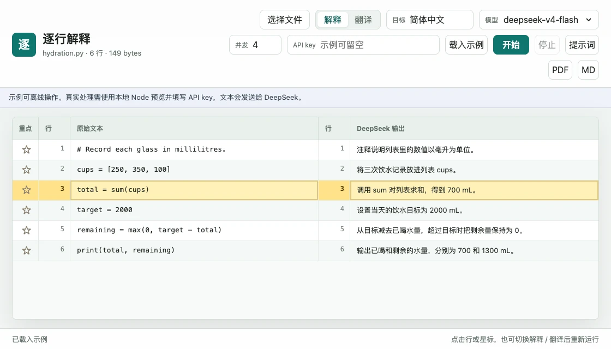

本地阅读工具 · DeepSeek
逐行解释.
左边读原文，右边看对应的解释或翻译。
为代码和结构化文本做的双栏阅读工具。选择一个文件后，用 DeepSeek 按行生成解释或翻译。悬停、点击或用键盘定位时，两侧会同步高亮。

原文与解释
试试逐行高亮、标星、提示词和导出。内置示例可离线回放；真实处理需要本地 Node 预览和你自己的 DeepSeek API key。
使用方式
- 对照着读
- 逐行对应原文与解释，适合在阅读脚本或 JSON、CSV 等结构化文本时快速找回上下文。
- 先理解整份文件
- 可先生成全文件的上下文提示，再逐行处理。解释、翻译和上下文提示词都能单独编辑。
- 留下重点
- 为关键行加星标，导出 Markdown 对照文件，或通过浏览器生成 A4 横版 PDF。
网页工具在本机运行，生成解释或翻译时调用 DeepSeek API，需要配置自己的 API key。